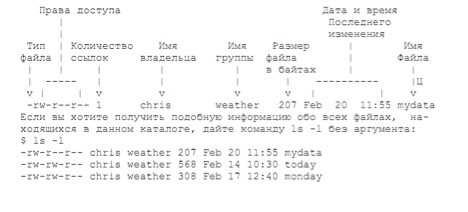

Файловая система Linux
Назначение каталогов
Структура основана на стандарте Unix Filesystem Hierarchy (иерархия файловой системы Unix). Все файлы организованы в каталоги, которые иерархически соединены друг с другом, образуя одну общую файловую структуру - древовидную или "родители-потомки". Над файлами и каталогами можно выполнять различные действия: копирования, перемещения, поиска или создания ссылок (ярлыков).
Вверху файловой системы находится корневой каталог (обозначается символом "косая черта"), от которого ответвляются другие каталоги. Каждый каталог может содержать несколько других каталогов или файлов, но родительский каталог у него всегда бывает только один. В корневом каталоге имеется несколько системных каталогов, которые содержат файлы и программы, относящиеся к самой ОС Linux.
В корневом каталоге содержится:
/bin(двоичные файлы) хранятся двоичные файлы Linux; большинство основных команд Unix находятся в этом каталоге./sbin(системные двоичные файлы) содержит системные двоичные файлы, которые являются утилитами для администрирования (например,fdisk)./boot(илиefi) содержит файлы загрузчика Linux./dev(устройства) содержит драйверы устройств, которые используются для доступа к устройствам и ресурсам системы, таким как диски, модемы, память и т.д. Например, вы можете читать входные сигналы от мыши, имея доступ к/dev/mouse. Устройства, чьи имена начинаются на/dev/pty, это "псевдотерминалы". Они используются для входа с удаленных "терминалов". Например, если ваша машина в сети, вход к вам по telnet будет использовать одно из устройств/dev/pty./sysпохож на/devи содержит конфигурации устройств и драйверов./etc(другое) содержит все файлы системы администрирования./etc/passwdинформация обо всех пользователях в ОС./etc/groupсписок всех групп, созданных в ОС./etc/shadowвсе учетные данные пользователей./etc/hostnameназвание комьютера, использовать для редактирования./etc/hostsстатические записи DNS внутри хоста./etc/issueинформация об ОС./etc/apt/sources.listфайл конфигурации./etc/network/interfacesинформация о сетевых интерфейсах./lib(библиотеки) содержит общие библиотеки для двоичных файлов внутри/binи/sbin. Эти файлы содержат код, который могут использовать многие программы./proc(процессы) хранятся файлы с информацией о процессах и ядре. файлы хранятся в памяти, а не на диске./proc/cpuinfoинформация о процессоре./proc/meminfoинформация об ОЗУ./lost+found, как следует из названия, содержит файлы, которые были восстановлены./mnt(монтировать) содержит примонтированные каталоги (например, удаленный файловый ресурс)./mediaсодержит каталоги, смонтированные для съемных носителей (например, DVD)./opt(опции) служит для установки дополнительных программных пакетов./tmp(временная) используется временно; содержимое стирается после каждой перезагрузки./usr(пользователь) содержит множество подкаталогов, необходимые для нормального функционирования системы./usr/shareхранит инструменты, файлы словарей./homeявляется главным для пользователей./rootявляется главным каталогом пользователя root./srv(обслуживание) содержит некоторые данные, относящиеся к функциям системного сервера (например, данные для FTP-серверов)./var(переменная) хранятся переменные данные для баз данных, журналов и сайтов. Например,/var/www/html/содержит файлы для веб-сервера Apache./run(время выполнения) содержит данные системы выполнения (например, пользователей, вошедших в систему в данный момент).
Корневой каталог, кроме того, содержит каталог home, который может содержать домашние каталоги всех пользователей системы. Домашний каталог каждого пользователя, в свою очередь, будет включать в себя каталоги, который пользователь создает для своих нужд. Рабочий каталог - тот, в котором вы в данный момент работаете в командной строке. При регистрации в системе в качестве рабочего принимается ваш домашний каталог, имя которого обычно совпадает с именем пользователя.
Cсылки между файлами
В Linux существует два вида ссылок на файлы - символические и жёсткие. Символические похожи на привычные ярлыки, при нажатии на которые открывают целевой файл или папку. Могут ссылаться на другие разделы диска, но содержат только имя файла, а не его содержимое. Если файл удалён, то ссылка будет существовать и указывать в никуда. Жёсткие ссылки тоже указывают на файлы, но работают только в пределах одной файловой системы, не могут ссылаться на каталоги, позволяют перемещать и переименовывать файл без вреда для ссылки.
Путевые имена
Имя, которое дается каталогу или файлу при его создании, не является полным. Полным именем каталога является его путевое имя. Иерархические связи, существующие между каталогами, образуют пути, и эти пути можно использовать для однозначного указания каталога или файла и обращения к нему.
Путевые имена могут быть абсолютными и относительными. Абсолютное путевое имя - это полное имя файла или каталога, начинающееся символом корневого каталога. Относительное путевое имя начинается символом рабочего каталога и представляет собой обозначение пути к файлу относительно вашего рабочего каталога. Как правило, относительные путевые имена нужно использовать при каждой возможности, а абсолютные - только в случае необходимости.
При создании каталога в нем сразу же делаются две записи. Одна из них будет представлена точкой (.), а вторая - двумя точками (..). Точка обозначает путевое имя данного каталога, а две точки - путевое имя его родительского каталога.
Например, если letters - рабочий каталог и нужно скопировать в него файл weather, то каталог chris (родительский) можно обозначить двумя точками, а каталог letters - одной: ср ../weather .
Права доступа
У каждого файла есть уникальное имя, по которому к нему можно обращаться, и конечный набор операций, которые процессы могут выполнять в отношении этого объекта - read (чтение), write (запись) и execute (выполнение). Права доступа означают разрешение на выполнение операции.
Когда пользователь входит в систему, его оболочка получает UID и GID (UID – идентификатор пользователя, GID - идентификатор группы), которые содержатся в его записи в файле паролей, и они наследуются всеми его дочерними процессами. - SUID (Set User ID) - атрибут исполняемого файла, позволяющий запустить его с правами владельца, не зависимо от того - кто запускает эту программу. - SGID (Set Group ID) аналогичен SUID, но относиться к группе. При этом, если для каталога установлен бит SGID, то создаваемые в нем объекты будут получать группу владельца каталога, а не пользователя.
Права доступа состоят из трех троек символов. Первая тройка представляет права владельца файла, вторая представляет права группы файла и третья права всех остальных пользователей.
